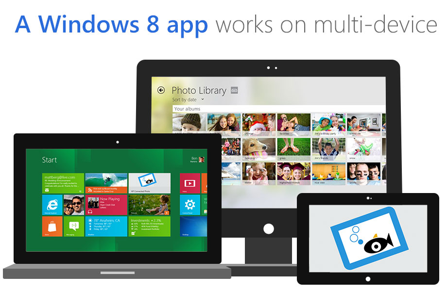
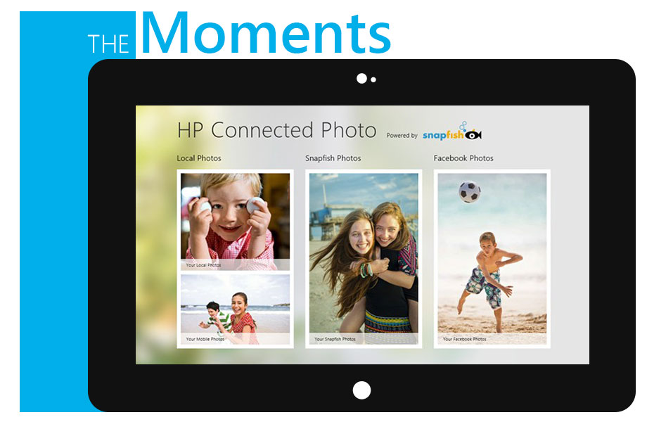
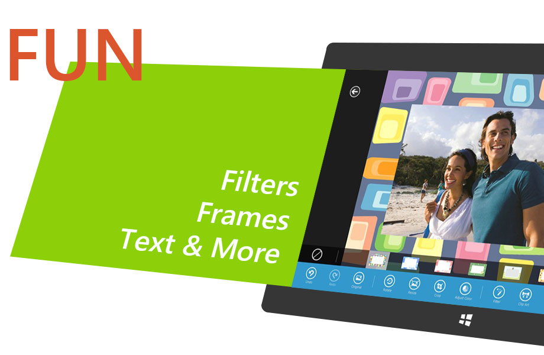
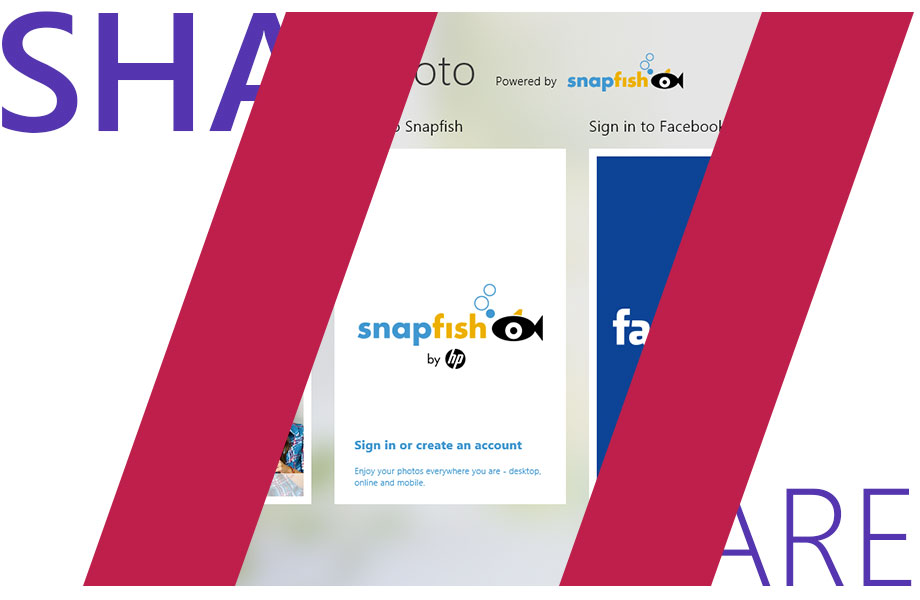
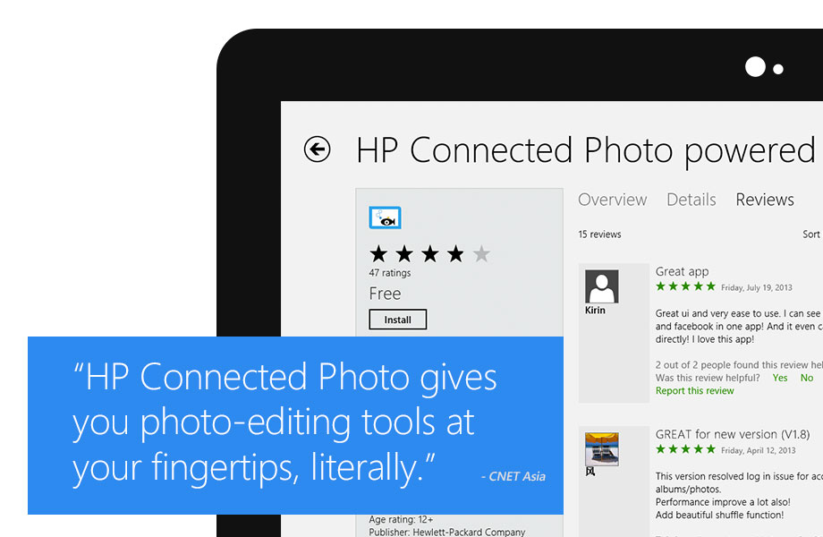
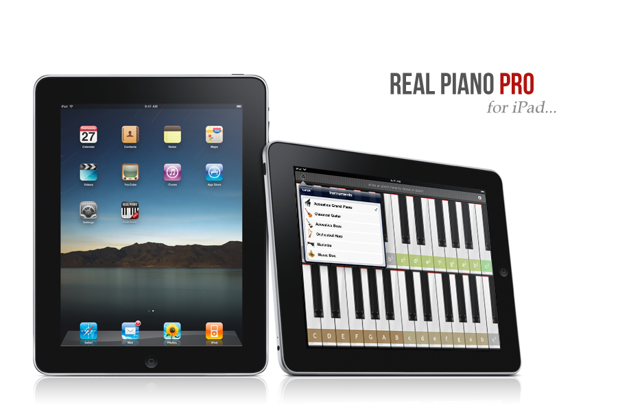
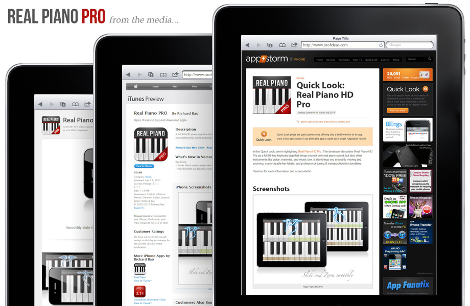
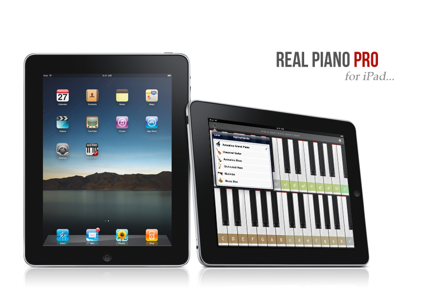
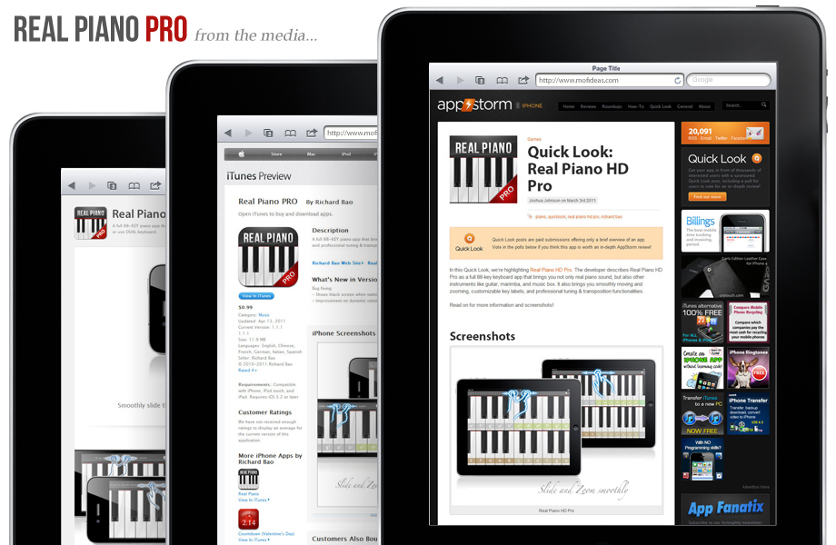

User Interface Designs
APP DESIGN
I was the lead designer for HP Connected Photo before its very first release. The app was an effort from HP to adapt Windows 8 which was very new at the time, so our product team had a tough task to build an app that leveraged the features of the new system and showcase the unique experience with the Metro Design Language from Microsoft. It is great to see the groundwork that our team had lay down still drives the app to move forward and expanded to new platforms.
-
Started as a personal project back in 2011, Real Piano and Real Piano Pro are now one of the most popular piano app among music enthusiasts around the global. With over millions downloads, this full 88-key piano app is fun to play on a range of iOS devices for a realistic grand piano sound. I truly love the process of crafting the best in the class visual elements, particularly the elegant and classic grand piano keyboard for the production of the very first version.
HP Connected Photo 2012
    Real Piano for iPhone and iPad 2011

 


